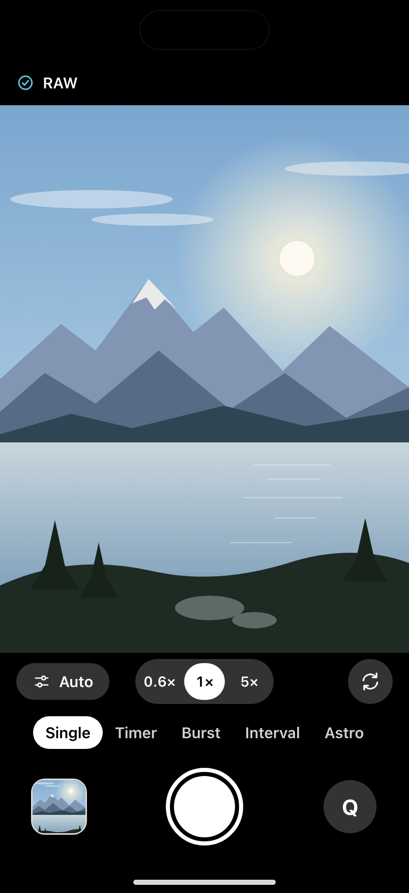
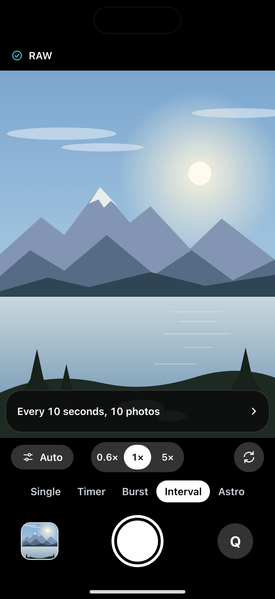
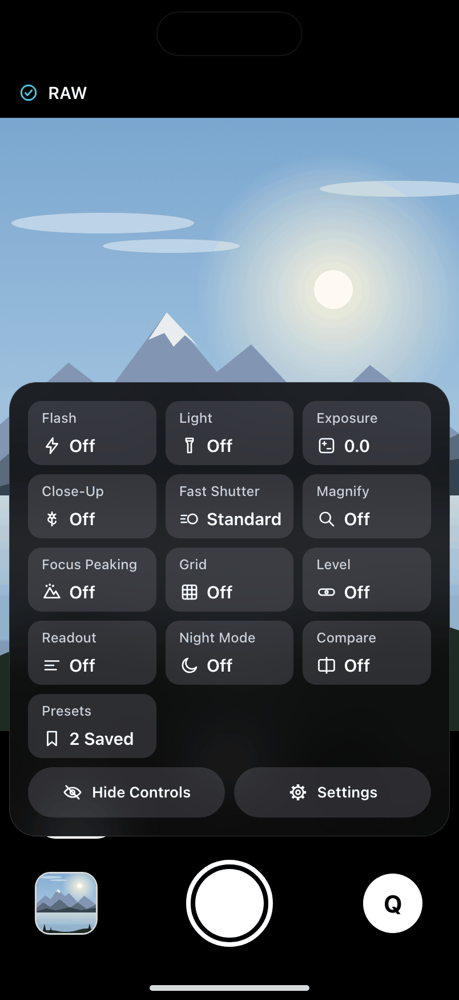
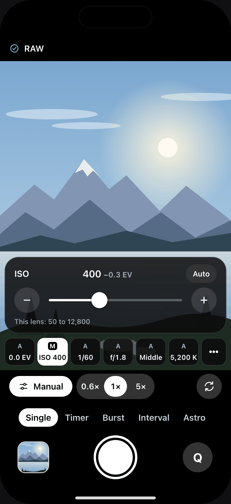
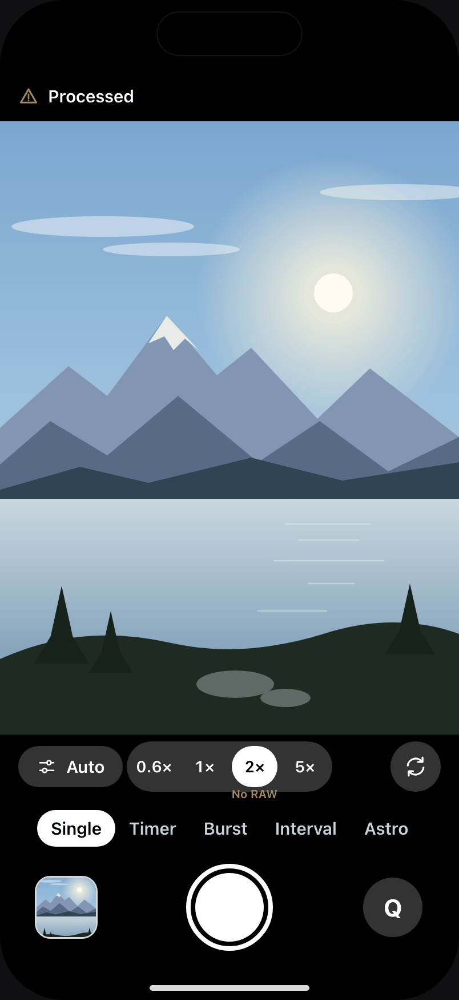

Overview
Design version: 1.0.0, direction B · Reach (2026-11-17). Planned design for release 1.0.0; the app is built to match it. Includes the Settings structure and the device coverage accepted on 2026-11-17 (SETTINGS-PLAN.md), and the Last Photo viewer, the Photo Details redesign and Burst of 2026-11-18.
The complete design of nope. for release 1.0.0 in direction B (Reach), chosen from the options of issue 74. It redraws every screen and state the app has today. One capability is added, by the owner’s decision of 2026-11-18: the Last Photo viewer. Burst, accepted the same day, adds a speed choice, Fast or Slow, to the existing burst. 307 screens are drawn (163 for iPhone, 80 for iPad, 33 for iPhone Duo, 31 for Apple Watch; system surfaces are counted with iPhone), each as a self-contained HTML mockup with a PNG beside it in screens/ (12.6 MB of PNG in all). A screen is drawn for a device where its layout, presentation or reach differs; the rule for the rest is in layouts.html. Placeholder pictures are drawn in SVG. Sample values (sizes, ranges, timings) are examples.
The design in six screens






Principles
- The photo is the focus. The picture is uncovered in the default state; anything on it has a dark backing, rests on an edge, and is there only while it is needed.
- Reach. Everything used while shooting is in the lower third. The top line is status.
- One place for each option. Shooting options are on the camera or in Q; set-once options are in Settings.
- Honest status. Teal only for verified facts, amber only for warnings, each with a symbol and words. Filled white means selected. Night mode is red on black, with on filled and off outlined.
- Native parts. System controls, menus, sheets and forms; custom drawing only for the shutter, the viewfinder overlays, tiles and readouts.
Decisions on the open points
| Point | Decision | Reason |
|---|---|---|
| Edit (rearranging Q tiles) | Dropped. | The app has no tile customising today, so it would be a new capability. The tile order is fixed. |
| All Controls (a second Q page) | Dropped. All tiles are in the one panel. | Nothing in Q is more than one tap after Q. |
| Settings behind Q | Kept, with more ways in. | Q › Settings is two taps. Settings keeps its own button on iPad, on the iPhone Duo inner display and before the camera is ready. The Formats sheet links to All Photo Settings, the processing note carries its own switch, and Settings has search. |
| Settings structure (accepted 2026-11-17) | Five groups by what they change; one row for the details in each photo; one page for the HEIF and JPEG copies; no row that appears or disappears. | The twelve decisions and their reasons are in SETTINGS-PLAN.md; the result is in settings.html. |
| Face Detection’s name | Focus on Faces. | It says what the switch controls. The Shortcuts action is renamed with it, which is a change outside the interface. |
| Focus Peaking | A Q tile, in full auto and manual. | Two taps in place of four. With all thirteen tiles the panel has five rows and covers about 57% of the picture while open (45% with four rows). |
| Interval in Pro Tools | Removed. | The drive strip and its card are the one home. |
| Settings on iPad | A single-column popover in both orientations; no split view. | One structure to keep; the picture stays visible. |
| Device coverage | Drawn where presentation differs; a written rule for the rest. | layouts.html, ipad.html, duo.html, watch.html. |
| Astro card coverage (about 30%) | About 23% ready, 15% running. | The card is one row. Shutter, ISO and focus are not repeated in it, because Astro turns on Manual Controls and their readouts are already there. |
| Focus Range merging Close-Up and Far Focus | Not merged. | A merged tile made Close-Up three taps. Close-Up stays its own tile at two taps; Far Focus joins with Manual Controls on, as today. |
| Does Astro imply Manual Controls? | Yes, confirmed in the code. | Turning Astro on turns Manual Controls on, and turning them off turns Astro off (CameraModel+Astro.swift). The design shows Manual as on in Astro. |
| Five drive words in eleven languages | They fit. | Measured at the default text size on a 402 pt screen: all eleven fit at 8 pt word padding (longest 369 of 386 pt). The strip uses 12 pt where that fits, 8 pt where it does not, and scrolls at larger text sizes. See the strip figure in Drive modes. |
| Manual Controls: the Settings switch and the M pill (issue 77) | Both removed. | The camera button shows and changes the state; a second switch elsewhere would be a duplicate. |
| Not Signed, with signing off by default (issue 80) | No warning when signing is off by choice. | A warning that is always on is noise. The amber chip stays for a photo that should have been signed and was not. Needs the owner’s agreement. |
| Last Photo (owner, 2026-11-18) | A tap opens the photo full screen inside nope.; the Last Photo menu is removed. | iOS cannot open Photos at one photo. The viewer shows a screen-size preview held in memory only, and carries Photo Details and Open in Photos. See viewer.html; its open points are in BUILD-SPEC.md, section 7. |
| Photo Details (owner, 2026-11-18) | What’s in This Photo shows everything nope. holds about the photo, in a summary and ten groups, with the long lists behind disclosure rows. | The owner asked for as much as the app can say, organized cleanly. Every value comes from the read-back or the save already in memory; nothing is read from Photos. See photo-details.html; its open points are in BUILD-SPEC.md, section 7. |
| Burst (owner, 2026-11-18) | A tap takes one photo; holding the shutter takes photos until it is let go; Start Burst runs one without holding. | Fast or Slow (up to 2 a second) from the Burst word, for the session only. The card shows the count and the rate measured from the burst; no deeper saving buffer until it is measured on a device. See burst.html and BURST.md. |
| Period color of the icon | Keep teal. | See icon.html. |
Beyond interface work
These are needed by the design or by issues 75 to 80 but are not interface changes. They are listed in BUILD-SPEC.md and are not designed around.
- Defaults in
NopeCore(issue 80): RAW only, Focus on Faces (the stored value followsFaces) off, signing off, and a new stored setting for Show Processed Marker. - Per-lens distortion disclosure (issue 80): needs device checks and a per-lens value published by
NopeCore. Until then the line is not shown. - Removing the golden-ratio grids (issue 76) and the Light fix (issue 75) include core changes.
- Turning Manual Controls off while Astro turned them on: to be checked in the core, so that the camera button always turns both off.
- Honesty wording: the reworded first-run statement, the processing note and the two new Honesty entries are drafts and need the Honesty review in every language.
- Focus on Faces: the rename changes the title, parameter name, summary and spoken answers of the Shortcuts action Set Face Detection (
App/NopeApp/Intents) and their strings. The action’s type name stays, so saved shortcuts keep working. - Settings search needs a keyword list and a stable identifier for each page and row; both are interface code and strings, with translations to review.
- Honesty wording: every Settings explanation in this set, the Standard File Tags sentence, the Always Saved footer and the Faces and Autofocus entry are drafts for the Honesty review.
- To confirm on a device, with no behavior change in 1.0.0: what the Lock Screen camera offers while locked; folding and unfolding the iPhone Duo with something open; the half-open posture; the watch app in Always On; iPhone sideways at the largest text size.
- The preset delete confirmation is an interface-only addition and can be left out without affecting the rest.